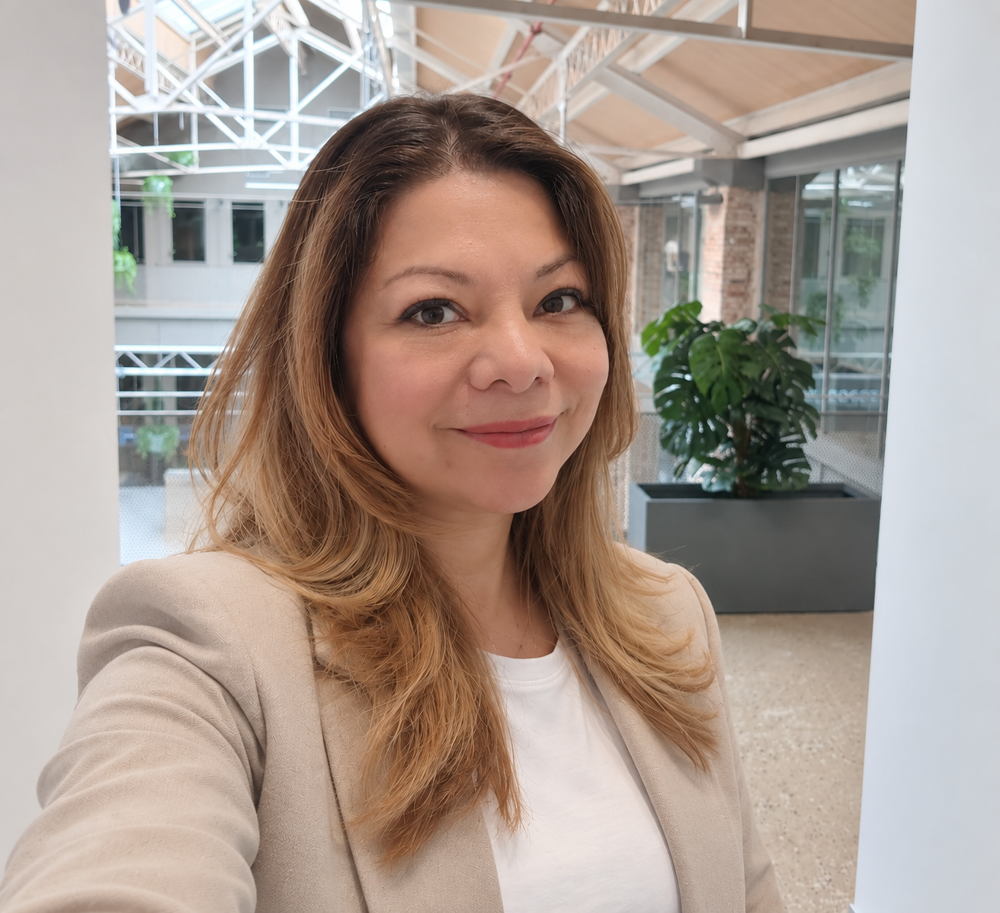

La iniciativa
Una comunidad profesional que todavía no se ha reunido nunca.
En España hay profesionales de origen guatemalteco dirigiendo áreas de tecnología en empresas nacionales y multinacionales, doctorándose e investigando en universidades españolas, fundando compañías, gestionando fondos de inversión y enseñando. No es una comunidad por descubrir: es una comunidad que no se conoce entre sí.
Guatemala Tech Leaders España existe para cambiar eso, y para que ese conocimiento colectivo sirva a la sociedad en la que este grupo desarrolla su trabajo.
Principios.
Cinco compromisos que definen la iniciativa desde el primer día y que cualquiera puede exigirle.
- Nuestro origen nos une, nuestra aportación sucede aquí.No es una red de retorno ni una asociación basada en la nostalgia. El objetivo es contribuir a la sociedad española, que es donde este grupo vive y trabaja.
- Independencia.Sin dependencia de administraciones, partidos, empresas ni patrocinadores. Sin agenda política guatemalteca ni española.
- Sin coste y sin cuotas.Participar no cuesta dinero, ni ahora ni como condición futura. Nadie compra un asiento.
- Discreción por defecto.Las conversaciones son privadas. Ningún nombre, foto o afiliación se publica sin autorización previa y por escrito de la persona.
- Utilidad antes que estructura.Primero se comprueba que la conversación aporta algo. Solo si aporta, y solo si quienes participan lo deciden, se construirá una estructura.
Qué es y qué no es.
Es
- Una iniciativa profesional independiente en fase de constitución.
- Un grupo reducido y seleccionado por trayectoria.
- Un espacio de conversación privada entre pares.
- Un punto de partida para producir cosas útiles fuera de la sala: charlas, documentos y colaboraciones.
No es
- Una asociación constituida, con junta directiva o cuota.
- Un registro abierto ni una red de contactos comerciales.
- Una organización de diáspora, de cooperación o de retorno.
- Una entidad con representación oficial de Guatemala ni vinculada a ninguna administración.
Estado de la iniciativa.
Registro público de lo hecho hasta la fecha. Ninguna etapa compromete a la siguiente.
- Julio de 2026Se publica la primera caracterización de la diáspora científica y profesional guatemalteca en España.Su lectura confirma la hipótesis que da origen a esta iniciativa: la capa directiva e industrial no está representada, y no por descuido, sino por el método de localización empleado.
- Agosto de 2026Análisis del estudio y definición del ámbito.Se fijan los cuatro criterios de pertenencia, los nueve campos del perímetro tecnológico y los cinco principios de la iniciativa.
- Septiembre de 2026Publicación del documento de posición y de la infraestructura digital.Desarrollada íntegramente por la impulsora, sin coste y sin proveedores.
- En cursoIdentificación y contacto de perfiles, uno a uno.Localización a través de fuentes públicas y, sobre todo, de recomendación personal, que es la vía que funciona en este segmento.
- Cuarto trimestre de 2026Primera mesa en Madrid.Entre diez y doce personas. A partir de ahí, quienes participen deciden si hay continuidad, en qué forma y con qué compromiso.
Cómo se decide quién participa
La selección la realiza hoy la impulsora, con los cuatro criterios publicados y buscando variedad de sectores, de trayectorias y de puntos de vista. A partir de la primera mesa, ese criterio pasa a decidirse de forma colegiada.
Quién impulsa la iniciativa.

Madelaine Castro
Secretaria General de itSMF España. Calidad, continuidad y gobierno de la tecnología en S2 Grupo.
Nacida en Guatemala y residente en España, donde ha desarrollado más de veinte años de carrera en tecnología. Dirige la calidad, la continuidad y el gobierno tecnológico en S2 Grupo, compañía española de ciberseguridad, con responsabilidad funcional sobre cinco marcos de certificación. Es Secretaria General de itSMF España, la asociación profesional de gestión de servicios de tecnologías de la información.
Impulsa esta iniciativa a título personal y con su nombre delante, precisamente para que cualquiera pueda comprobar quién la propone antes de decidir si merece su tiempo.
El siguiente paso.
Si encajas en los criterios, o si conoces a alguien que encaje, el primer movimiento es siempre el mismo: una conversación de veinte minutos.